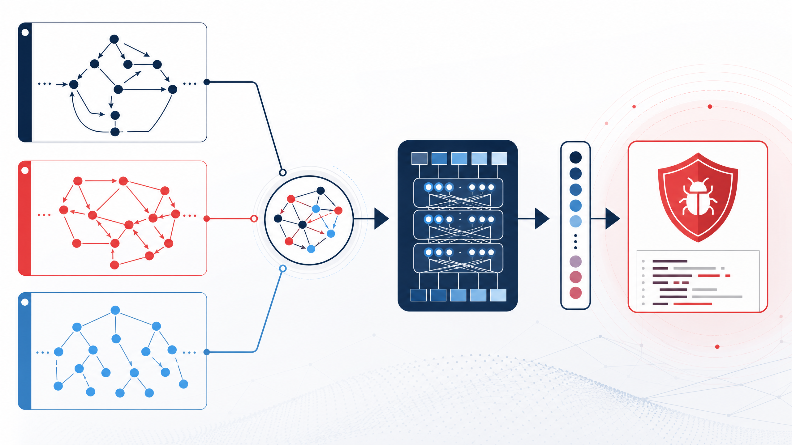
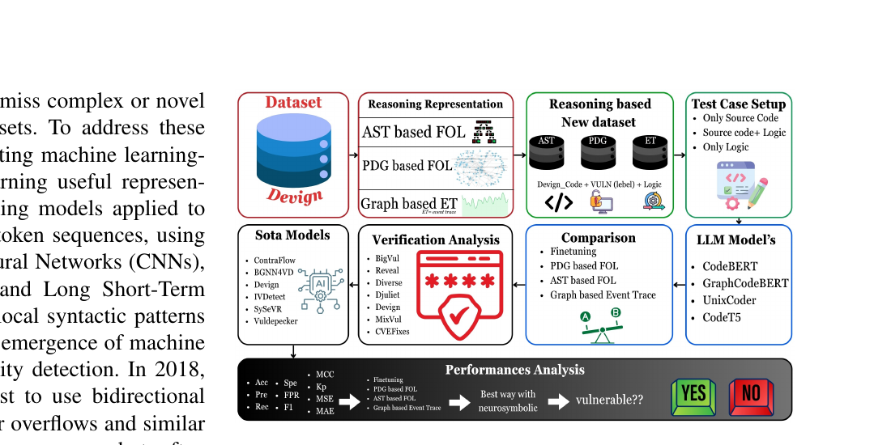
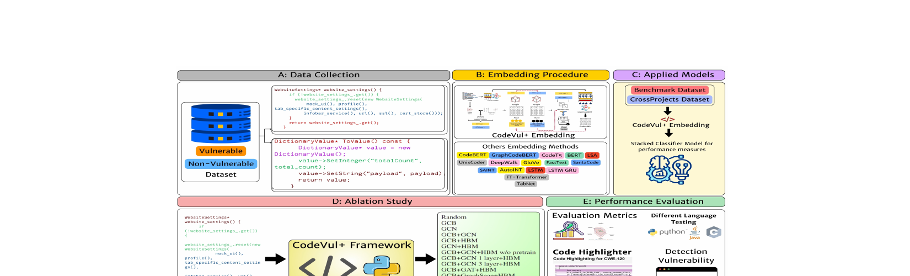
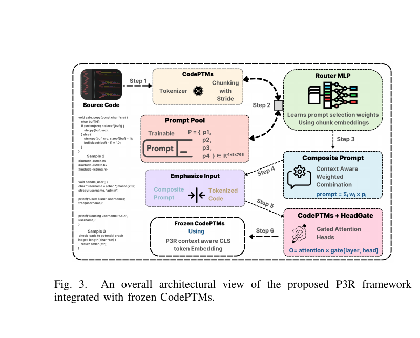
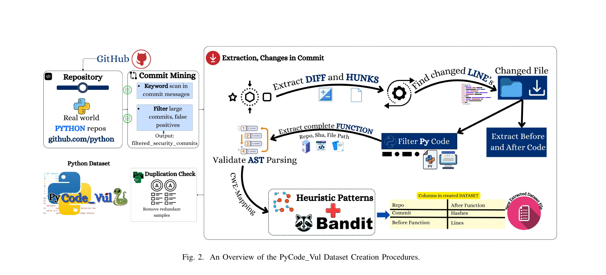

Below are selected research projects from our lab, focusing on software security, vulnerability detection, and large language models for code understanding. Each project includes the methodology overview, publication details, and links to code repositories where available.

We propose CodeGraphNet, a hierarchical graph-fusion embedding framework for function-level vulnerability detection in C/C++ code. CodeGraphNet jointly models inter-procedural control flow and function-call connectivity, data dependencies, and execution context through complementary graph views. The framework achieves 0.767 accuracy and 0.769 F1-score, with improvements of up to 31.0% in accuracy and 49.4% in F1-score over baselines. It integrates LIME for interpretability, enabling line-level error localization.
Md. Fahim Sultan, Md. Shazzad Hossain Shaon, Tasmin Karim, Mohammad Wardat, Alfredo Cuzzocrea, Mst Shapna Akter

Large Language Models (LLMs) have demonstrated strong capabilities in code understanding. However, their application to vulnerability analysis remains limited due to challenges in capturing deep semantic and structural program properties. We propose ResVul-LLM, a neurosymbolic framework that combines LLMs with symbolic reasoning for C/C++ vulnerability analysis, integrating First-Order Logic (FOL), Abstract Syntax Trees (AST), Program Dependence Graphs (PDG), and event trace approaches. The system leverages several pretrained LLMs and evaluates performance across multiple benchmark datasets.
Md. Shazzad Hossain Shaon, Mst Shapna Akter, Alfredo Cuzzocrea

Pre-trained code models have shown strong potential in vulnerability detection. However, these models often fall short in capturing the deeper structural dependencies between tokens. We propose CodeVul+, a structure-aware framework that integrates frozen transformer embeddings with GCN-based dynamic reasoning for vulnerability detection. Our hybrid approach uses GCN to modify transformer embeddings, fusing bidirectional semantic context with topological reasoning over dynamically constructed graphs. Experiments on eight benchmark datasets demonstrate that CodeVul+ outperforms prior approaches across multiple settings.
Md. Fahim Sultan, Mst Shapna Akter, Alfredo Cuzzocrea

While pre-trained code language models (CodePTMs) have achieved remarkable performance on code vulnerability detection tasks, their deployment remains constrained by computational overhead and memory requirements during fine-tuning. We propose P³R, a novel plugin-based PEFT framework that strategically incorporates lightweight parallel modules into frozen CodePTMs. The framework introduces three parallel plugin modules that operate at distinct abstraction levels within the transformer architecture. P³R requires only <0.3% trainable parameters yet consistently outperforms existing PEFT baselines across multiple code vulnerability benchmarks.
Md. Fahim Sultan, Mst Shapna Akter, Alfredo Cuzzocrea

We present PyCode_Vul, a comprehensive benchmark vulnerability dataset constructed from 15 open-source GitHub repositories for Python-based vulnerability detection. The dataset focuses on mining and analyzing GitHub repositories for code-level vulnerabilities with learnable distribution for LLM-based vulnerability detection. The pipeline includes commit mining, function extraction, AST validation, heuristic pattern matching with Bandit, and de-duplication to produce a high-quality labeled dataset of 17,811 functions.
Tasmin Karim, Mst Shapna Akter, et al.